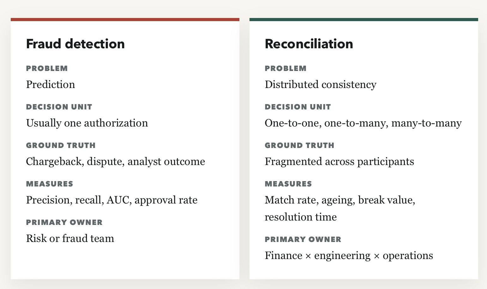
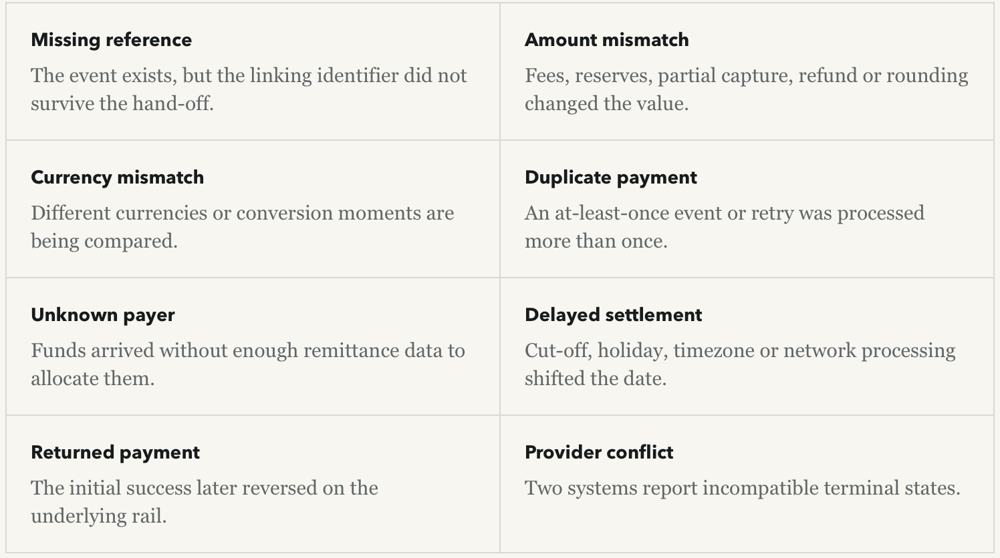

Why Payment Reconciliation Is Harder Than Fraud Detection
Imagine two alerts landing at a payments company at 9:00 a.m. The first says a card transaction has a 92% probability of being fraudulent. The second says yesterday's processor settlement is $187,412.63 short of the company's internal ledger. The fraud alert is urgent. The reconciliation alert is existential.
The fraud team can inspect a scored transaction, compare it with known patterns, ask for stronger authentication, decline it, or let it through. The decision is imperfect, but the problem is legible: one transaction, one decision point, a measurable trade-off between false positives and false negatives, and — eventually — a label.
The reconciliation team has no such clean object. The apparent shortfall might be real. It might be a batch that crossed midnight in another timezone. It might be a fee applied after clearing, a partial capture, a refund detached from its original sale, a chargeback netted without line-item detail, an FX rate that changed between authorization and settlement, or an event delivered twice and processed out of order. Worse, each participant may be internally consistent while disagreeing with everyone else.
My central claim is not that fraud detection is easy. It is that fraud detection is structurally a prediction problem, while reconciliation is a distributed-consistency problem with no universal ground truth.
Fraud asks, “What will happen?” The truth arrives later in the form of a dispute, a chargeback, or an analyst-confirmed outcome. Reconciliation asks, “What happened?” The uncomfortable answer is that the truth may never have been recorded in one place.

A card payment does not move directly from customer to merchant. It traverses a chain: merchant, gateway, processor, acquirer, card network, issuer. The approval returns along the same route, often in 2–5 seconds [1]. That speed creates a powerful illusion: if the customer sees “approved,” the payment must be complete.
It is not complete.
- Authorization reserves funds; it does not move them.
- Capture tells the system the merchant is ready to collect.
- Clearing exchanges transaction detail between the acquiring and issuing sides.
- Only Settlement moves actual funds, typically 1–3 business days later in North America, though the timing varies by network, country, cut-off and liquidity arrangement [1][2].
This separation is not an implementation footnote. It is the reason “payment status” is not a scalar. An authorization can be approved but never captured. A capture can be partial. Clearing can reclassify an interchange category. Settlement can be delayed, netted, reversed, returned, or split. A payment collected on Monday may not appear in the merchant's bank account until Wednesday [3].
Every hop also creates a record on its own cadence. A gateway report may appear in real time. A processor may issue a daily batch. A card network may deliver a clearing file on a different operational day. The bank statement shows the final deposit, often net of fees and other adjustments. If the gateway and acquirer are separate vendors (not a full-stack PSP), the merchant inherits different support channels, formats, identifiers and cut-offs as an operational burden [4].
“An institution can have all the relevant records and still lack one reliable view of the transaction.” — Backspace Tech [5]
There is no universal transaction key that reliably survives the full journey. The
merchant has an OrderID. The gateway has a payment intent or
token. The processor has its own TransactionID. The acquirer
and network introduce reference numbers. The issuer has an authorization code. Refunds,
disputes and adjustments may refer to the original transaction inconsistently, or not at
all. Even the merchant descriptor can mutate: processors prepend strings such as
PAYPAL *, SQ * or STRIPE.SNL *, so structurally
identical purchases can present differently depending on routing [6].
The records are supposed to disagree!
A useful way to understand reconciliation is that most mismatches are not errors. They are legitimate consequences of timing, netting and representation.
The system's job is to distinguish expected disagreement from actual loss.
Order date is not capture date, and capture date is not payout date. Batches close at different times. Weekends and holidays extend settlement windows. A transaction booked after cut-off rolls to the next processing cycle, which is why naive “trade date + N business days” logic fails. Authorization files show transactions immediately while settlement files arrive later, creating temporary unmatched items and general-ledger discrepancies. We are not even treading the territory of cross-border payments, which add timezone and network-rule differences [7][8].
The customer sees the gross amount; the merchant usually receives the net amount. The issuer sends funds through the network minus interchange, and the acquirer deposits the remainder after assessment and processing fees. In Castler's canonical example, a $100 sale becomes a $97.70 deposit. The $2.30 difference is an expense to classify, not a missing payment [9].
That is the simple case. Fees can be applied at the wrong contractual rate, assessments can be double-counted, and reserve deductions can be wrong. A transaction may be submitted at one interchange category and later downgraded to a more expensive rate after clearing. Some processors net chargebacks against settlement without exposing sufficient line-item detail. For international payments, the FX rate at authorization may differ from the rate at settlement [10].
Partial captures, partial refunds and appeasements create their own combinatorics. One authorization can become multiple captures. Multiple sale lines can be covered by one payout. A refund can arrive separately from the original capture, while a dispute can arrive weeks later with a fee. Marketplace adjustments and manual journals further separate accounting entries from the transaction that caused them [11].

These are not merely one-to-one matching problems. A robust engine must handle one-to-many, many-to-one, many-to-many, net-to-net, contra and partial matching. It may need to find a subset of settlement lines whose total equals one transfer even when identifiers do not match [13].
Reconciliation becomes much harder when a company treats a payment service provider's dashboard as its ledger. A PSP is an integration. The company still needs an internal, double-entry, append-only record of obligations and movements. Corrections should be new entries, not edits to history. Money should be represented as integers in minor units, never floating-point values [14].
- Make every operation idempotent: Charges, refunds, payouts and webhook handlers need idempotency keys. This protects against the imperative retries on the Network, and a non-idempotent retry can double-bill a customer.
- Treat webhooks as triggers (not commands): Delivery is
at-least-onceand can beout-of-order. On receipt, deduplicate the event and reconcile against provider state rather than assuming the event is the next valid transition.- Use sagas across external boundaries: There is no distributed
ACIDtransaction spanning your database and a PSP. Reserve a pending ledger entry, call the provider with an idempotency key, then post the settled entry or a compensating reversal.- Partition where ordering matters: Strict global ordering is unnecessary and expensive; per-account or per-transaction ordering is often the unit that matters.
- Prefer strong consistency on the money path: Derived views can be eventually consistent. Balances and postings cannot.
- Reconcile continuously: Watermarks and buffers can absorb expected late events; unexplained drift must page both engineering and finance.
Out-of-order delivery is a particularly destructive edge case. Suppose payment.refunded arrives before payment.paid. A command-oriented handler rejects the refund because the local payment is not yet marked paid. When the paid event later arrives, the local system settles into the wrong state indefinitely. A state-based reconciler instead uses the webhook as a prompt to fetch the provider's current truth and converge on it. [15]
The design consequence is subtle: reconciliation is not a back-office report. It is a production feature and an observability layer for money. In a healthy system it is quiet. The week it fires, it can be the difference between a five-minute repair and a regulatory incident. [16]
Automation still leaves a human-shaped problem
The best reconciliation systems are exception-based. Routine matches are automatic; known timing breaks and rounding differences resolve within policy; humans receive only genuine exceptions with reason codes, owners and deadlines. One practitioner benchmark describes a well-automated operation as matching 97–99% of position records automatically. [17]
But the remaining one to three percent is where ambiguity concentrates. “An API provides payment data, but does not standardise it,” Enterprise Times observed. Every provider must be mapped into an internal record containing the internal payment ID, provider ID, end-to-end reference, direction, currency, gross and net amounts, fees, FX rate, payer or recipient, rail, status, settlement time, return reason and original transaction ID. [12]
- 59% — Up to this share of finance resources goes to transactional, match-ready work, according to EY as cited by Optimus.
- 95% — Of that effort reportedly goes to items that already reconcile, rather than exceptions or analysis.
- 30–40% — Of finance teams' time is spent on repetitive matching and validation, according to Paystand as cited by Optimus.
These operational figures are second-hand vendor citations. The underlying EY study was not located in the research, so they should remain attributed rather than presented as independent facts. [18]
Vendors can materially reduce this work. Modern Treasury's Reconciliation Engine, for example, is described as ingesting bank and processor data across cards, ACH, wire, checks, RTP and FedNow; enriching and normalizing it; matching records; and routing exceptions into case management. Cointab supports complex matching patterns. Gr4vy and Merge address orchestration and API normalization. [19][13]
What software cannot do is manufacture identifiers that were never emitted, correct a provider's root-cause status conflict, or decide which team owns a break that spans finance, engineering, risk and external operations. Automation shrinks the haystack. It does not guarantee that the remaining needle has a single owner — or even that it is a needle.
Case study: Synapse / Evolve, 2024–2025
The collapse of banking-as-a-service middleware provider Synapse shows what happens when sub-ledgers stop being trustworthy. Synapse connected fintechs including Yotta and Juno with partner banks that held customer funds in large commingled accounts. After Synapse filed for bankruptcy in April 2024, court-appointed trustee Jelena McWilliams reported an approximately $85 million gap: Synapse's ledgers said depositors were owed about $265 million, while partner banks held about $180 million associated with the accounts. [20]
- $265M — Reported end-user obligations in Synapse ledgers
- $180M — Reported funds held by partner banks
- 100,000+ — Customers locked out for months
Evolve said Synapse failed at its “one most critical job”: keeping accurate ledgers of individual end-user funds. Litigation alleged the banks and Synapse lacked accurate ledgers and blamed one another for the inability to unwind the system. The estate reportedly lacked funds for a complete outside reconciliation. In November 2025, the CFPB allocated $46 million to victims. [21][22]
The lesson is not that reconciliation software would necessarily have prevented the collapse. It is that when the middleware ledger, bank ledgers and fintech ledgers diverge, there may be no authoritative dataset from which to reconstruct every customer's balance. The failure mode is not a bad prediction. It is the loss of accounting truth.
Why fraud detection is comparatively tractable
Fraud detection is a binary classification problem: fraud or legitimate. The labels are not instant and are sometimes noisy, but the framework is mature. Teams measure precision, recall and AUC; set thresholds by comparing false-positive and false-negative costs; collect analyst decisions and confirmed fraud outcomes; and retrain models as the distribution changes. [23]
Card networks also see more of the graph than any individual merchant. Visa says its Visa Account Attack Intelligence score responds in 20 milliseconds and was trained on more than 15 billion VisaNet transactions, using six times the features of earlier models. Visa claims an 85% reduction in false positives versus other risk models and says it helped proactively block $40 billion in fraud in fiscal 2023. [24]
Mastercard says Decision Intelligence evaluates roughly 143 billion transactions per year. Its DI Pro system uses graph techniques and generative AI across roughly one trillion data points, flags compromised merchants up to 300% faster, and reduces false positives by up to 200%. Those are vendor claims, but they illustrate the scale and maturity of network-level risk infrastructure. [25]
The stack goes beyond a model score. Rules engines capture explicit policies. Device fingerprinting and behavioral signals look for unusual combinations. 3-D Secure 2.0 can pass more than 100 data points — including device identity, geolocation consistency and typing cadence — to the issuer. One study cited by PYMNTS found up to a 40% reduction in card fraud while up to 95% of transactions were approved instantly without extra consumer input. [26]
The 2026 Merchant Risk Council report found that more than 90% of merchants use at least one authorization-related fraud tactic; approximately 40% use Strong Customer Authentication, 31% use 3DS2, and 37% use machine learning to fine-tune fraud management. [27]
Most importantly, the outcome feeds the system. A customer reports fraud. A dispute becomes a chargeback. An analyst confirms or rejects an alert. Those labels arrive late — sometimes days or weeks after the decision — but they still support weekly retraining, score-distribution monitoring and false-positive-rate alerts. [28]
Reconciliation has no equivalent universal label. An unmatched item does not tell you which system is wrong. Its resolution may require a bank trace, a processor file, an internal ledger replay, a contract check on fees, and a human judgment about whether the remaining difference is timing, classification or loss.
Where the thesis breaks down
Calling fraud “tractable” can become glib if it erases the parts of fraud that do not produce clean labels. At least four categories deserve a full counterargument.
Friendly fraud is invisible at authorization
In first-party misuse, the cardholder, card and delivery can all be legitimate. The transaction becomes “fraud” only when the buyer disputes it. Chargeflow says friendly fraud can account for up to 75% of chargebacks in some verticals. Mastercard's 2025 reporting put it at 45% of all chargebacks, while a 2026 industry report cited by ChargeGuard says more than 83% of enterprise merchants saw it rising and that merchants lose $4.61 for every $1 of friendly fraud. [29][30]
Stricter refund policy can also backfire. A case study cited by ChargeGuard found that a 38% reduction in refunds was followed by a 66% increase in chargebacks, as denied customers shifted to the dispute channel. [30] Transaction scoring cannot solve an incentive and post-purchase behavior problem on its own.
Synthetic identity fraud has no victim to label it
Synthetic identities combine real identifiers — sometimes a child's Social Security number — with fabricated details, build a plausible credit history for one or two years, then “bust out.” TheStreet, citing Deloitte, reports that 70% of suspected synthetic accounts display normal payment behavior before collapse. Deloitte projected losses could reach $23 billion by 2030; other estimates vary widely and should not be collapsed into a single number. [31][32]
Here, the neat feedback-loop premise fails. No real person necessarily reports the fraud. Each account can look individually legitimate. Detection becomes a graph and identity-consistency problem, with the label arriving only at bust-out.
False declines may cost more than fraud
Oxford Economics, in research commissioned by Checkout.com, estimated that merchants in the United States, United Kingdom, France and Germany forfeited $50.7 billion in legitimate revenue in 2022 because of erroneous declines. That four-country estimate exceeds the Nilson Report's $33.41 billion estimate of global card-fraud losses in 2024 — figures from different years and scopes, but a bracing comparison. [33]
PYMNTS reported in 2026 that 47% of merchants believe up to 5% of legitimate orders are incorrectly declined, contributing to roughly $50 billion in lost industry revenue. Card-not-present approval rates are reported around 85%, compared with about 97% in store, and estimates place false positives at 2–10% of declines. [34][35]
Incentives matter: network compliance programs penalize fraud approvals, while unnecessary declines do not appear as a direct loss on an issuer's balance sheet. The model can optimize the metric its owner is punished for while destroying merchant revenue elsewhere in the system. [33]
The adversary adapts
Reconciliation counterparties are messy, but they are not usually trying to defeat the matching algorithm. Fraudsters are. One practitioner review estimates model performance can degrade 20–40% within months without monitoring as concept, feature and label drift accumulate. Generative AI makes scam scripts, deepfakes and attack playbooks cheaper to produce and distribute. [36][37]
The partial rebuttal is that adaptation is precisely what a feedback loop is built to absorb. Fraud systems can observe new outcomes, retrain and change thresholds. Reconciliation systems can learn matching rules, but they cannot infer a missing reference or decide which of two counterparties' ledgers is authoritative without external evidence.
Build for disagreement, not just success
Payments teams often lavish attention on the authorization path because it is visible, real time and revenue-adjacent. Reconciliation arrives later, looks operational, and produces no celebratory conversion chart. That is a category error.
The authorization path answers whether a payment should proceed. The ledger and reconciliation system answer whether the company can prove where the money went. The first protects a transaction. The second protects the institution.
That means treating reconciliation as architecture from day one: an internal double-entry ledger; immutable entries and compensating reversals; integers for money; idempotency at every external boundary; event deduplication; state-based convergence for out-of-order webhooks; canonical provider mappings; explicit timing windows; complex matching; reason-coded exceptions; and shared ownership between finance, engineering and operations.
Fraud detection asks what will happen, and eventually receives a label. Reconciliation asks what happened, after every participant wrote down a different answer.
The mature operating model is not “no breaks.” It is knowing which disagreements are expected, automatically resolving the ones that are explainable, and escalating the small remainder while the evidence is still available. A high auto-match rate is useful. A trustworthy ledger is non-negotiable.
Fraud will remain adversarial, costly and technically sophisticated. Friendly fraud, synthetic identities and false declines all resist the simple binary-classification story. But the fraud industry at least has a decision surface, a vocabulary of measurable errors and a path by which outcomes improve the model.
Reconciliation begins where that clean story ends: after the event, across organizations, with asynchronous files, mutable statuses, fragmented identifiers and money that has already moved. It is not merely harder data matching. It is the discipline of reconstructing truth in a system that never had one shared copy.
Source notes
Research completed September 20, 2026. Several sources were verified through indexed extracts rather than full primary-document review; vendor claims are identified in the draft.
Settlement chain, timing and identifiers
- AniketBuilds, “How Payment Gateways Actually Work” — chain, authorization timing and distinction from settlement. medium.com
- Korona POS, “What Is a Merchant Acquirer?” — settlement timing. koronapos.com
- Ecommpay, “Understanding the Merchant Payment Settlement Process” — batch and payout flow. ecommpay.com
- Decta, “Merchant Acquiring vs Payment Processing” — unbundled-system overhead. decta.com
- Backspace Tech, “Making Sense of Mismatched Payments” — fragmented records, identifiers and ownership. medium.com
- Tapix by Dateio, “Merchant Name Inconsistency in Transaction Data” — descriptor variability. medium.com
- Backspace Tech, “The Settlement Timeline Factor, Part 2” — interim mismatches, GL effects and cross-border timing. medium.com
- spectastic, settlement-window reference — cut-off logic. github.com
- Castler, “What Is Payment Reconciliation?” — net-versus-gross example and mismatch causes. castler.com
- Ajit Kumar, “Settlement Mechanics Deep Dive” — fee errors, downgrades, chargebacks and FX. medium.com
- TopSource Global, e-commerce reconciliation guide — seven common mismatch buckets. medium.com
- Enterprise Times, “Why Payment Reconciliation Remains Manual” — canonical record design and exception taxonomy. enterprisetimes.co.uk
- Cointab, cross-border reconciliation guide — complex matching patterns. cointab.net
Ledger design, operations and Synapse
- ravenclaude, fintech payments engineering reference — minor units, double entry, idempotency and webhook controls. github.com
- Mauricio Morinelli, “Payments Foundations” and abhicse24, event-driven ledgers — out-of-order events and state-based reconciliation. medium.com, medium.com
- abhicse24, “How Fintechs Keep Money Truthful” — reconciliation as a feature. medium.com
- learn-skills.dev, reconciliation operations reference — exception processing and 97–99% auto-match benchmark. github.com
- Optimus, “Payment Reconciliation at Scale” — vendor-cited staffing and automation figures. optimus.tech
- Finextra, Modern Treasury Reconciliation Engine announcement — product capabilities and supported rails. finextra.com
- Boston Brand Media, Synapse bankruptcy shortfall report. bostonbrandmedia.com, finextra.com
- Mint, “The Bank Behind the Fintech Revolution Stumbles” — Evolve statement and customer impact. livemint.com
- Fintech Business Weekly, CFPB victim allocation. substack.com
Fraud infrastructure and feedback loops
- Journal of Risk and Financial Management, 2026 fraud-detection paper — classification metrics, thresholds and feedback. mdpi-res.com
- Visa, VAAI Score announcement — 20ms, training scale, false-positive and blocked-fraud claims. visa.com
- Mastercard, Decision Intelligence — transaction and data-point scale; vendor performance claims. mastercard.com
- PYMNTS, 3-D Secure 2.0 review — signals, friction and fraud-reduction claims. pymnts.com
- Merchant Risk Council, 2026 Global eCommerce Payments & Fraud Report — tactic adoption. merchantriskcouncil.org
- Elvis Bui, “Design Fraud Detection System” — delayed labels, retraining and drift monitoring. medium.com
Counterarguments
- Chargeflow, friendly-fraud guide — prevalence and cost estimates. chargeflow.io, riskified.com
- ChargeGuard, 2026 first-party fraud review — merchant trend, cost and refund-policy case study. trychargeguard.com
- TheStreet, synthetic identity fraud review — mechanics and normal-payment-pattern estimate. thestreet.com
- DEV Community, synthetic identity fraud overview — Deloitte and Federal Reserve loss estimates. dev.to
- Pulse FinTech, “The False Decline Tax” — Oxford Economics estimate and incentive asymmetry. pulse.bot
- PYMNTS, 2026 false-decline survey. pymnts.com
- PaymentWeek, false-positive estimates. paymentweek.com, globalbankingandfinance.com
- Aspire Softserv, model-decay review. dev.to
- Global AI Scam Landscape 2026 — generative-AI attack adaptation. github.com
Originally published on Substack, 19 Sep 2026.